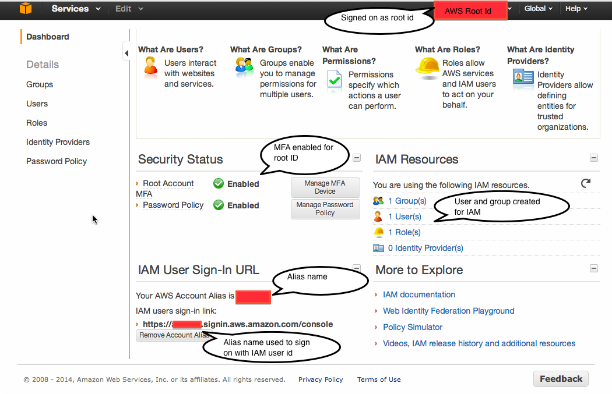

Assignment value: 2% of total course grade.
Assignment evaluation: Full credit will be awarded for creating a root AWS id. For safety purposes, we recommend that you at least add MFA (Step 2) and preferably IAM (Step 3). But these steps are not required.
Assignment due: Sunday Jan. 12, 23:59.
Upload to CourSys a screen shot of your signon.
During the course, you will be doing exercises to gain familiarity with Amazon Web Services (AWS). The larger programming projects will all be done on Cloud474, where you won’t be charged for computation and we can control the environment. But we also want to give you experience using basic AWS services, whether through their Web-based console interfaces or making simple calls from Python. To do this, you first need an AWS id. In fact, I recommend that you create both a root ID and an IAM id. I’ll explain the difference below.
This week’s exercise is administrative: You will create an AWS user id and set its security parameters. This is at once both trivial and tedious. It takes several hours of work and at the end you won’t have a single line of code to show for it. But it is a prerequisite for every use of AWS in the coming weeks, so best to start now.
Although you can use the same email address for your AWS Id as you use for your Amazon id, your AWS Id needs you to enter a password and credit card number. You can use the same password and credit card as you use for Amazon.com or you can use different ones. I recommend at least using a separate password, on the general security principle that every site should have a distinct passsword.
You could just stop here. But I recommend that you follow through with the following steps. Your AWS id is backed by your credit card. As your system is currently configured, anyone who knows your AWS password can run huge computations on the service— at your expense. If you uncover this situation, your only recourse will be to delete your account to prevent future misuse and pay the large bill.
You can increase protection in two ways:
Set up multifactor authentication (Step 2), requiring any user to have your cell phone when they sign on
Set up an IAM subaccount (Step 3), which can be deleted or restricted without affecting your root account.
Amazon’s many forms of security can be confusing. They provide a summary of all their credential types.
AWS allows you to set up multifactor authentication for your accounts. Steve Gibson (of Security Now) describes multifactor authentication as, “Something you know and something you have”. It increases the security of your account beyond just a password (something you know) by adding the requirement that a user has to have your phone (something you have) to login. Google provides a simple description—but note that clicking on the “Get Started” link on that page will add MFA to your Google account, not your AWS account.
The most straightforward way to add your smart phone to your AWS authentication is to download Google’s Authenticator app (see the “Virtual MFA Applications” list) and configure your AWS account to use it for sign on to your root account.
You can do everything you need from your Amazon account id but some security issues remain. If someone hacks your account you have no way of turning it off. A more secure solution is to set up a separate account under AWS’s Identity and Access Management (IAM) and do all your work from there. If someone hacks into your IAM account, you can sign in to your root AWS account, disable the hacked IAM account, and create a fresh IAM account to work from.
Amazon describes the differences between a root id and IAM id.
Added Wed Jan. 8 There are some subtleties to IAM that can trip you up. Consider the following screen, taken while signed on as the root AWS ID, setting up an IAM id:

The top right corner of the screen lists my root ID (I’ve obscured it under a red box for security purposes). The middle left shows that I’ve set up MFA and password policies for my root id. The middle right shows that I’ve created a group and a user for IAM. You have to create a group first, then add an IAM user to that group. Give the group “Administrator Access” permissions—the highest level.
The lower left is the subtlest part. This lists the URL from which you
sign on using your IAM id. Initially, it will include your AWS account
number, so it will look like
https://1234567890.signin.aws.amazon.com/console. That’s
neither easy to type nor remember, so Amazon lets you set an “alias”
by pressing a button just below the signing URL. You can pick anything
you want, but it will have to be different from any other AWS user’s
alias.
Once you have set your alias, say to chenaws then your
signon will become
https://chenaws.signin.aws.amazon.com/console. These are
indicated by the red rectangles on the lower left.
Now when you want to sign in to AWS using your IAM id, put the above URL into your browser. Then AWS will ask you for your IAM id and password and (if you’ve set MFA on the IAM id) then your MFA number.
If you’re doing all your work from an IAM account, it is annoying to have to sign in to your original AWS account to find out how much you’ve used the system in the past month. By default, your IAM ids cannot access your AWS billing pages—even if you give the IAM id full privileges.
To give your IAM account billing access:
Now you will be able to do everything you need, including check whether you’ve exceeded the Free Tier, from your IAM id. You can keep your root AWS id in reserve in case the IAM id is hacked.